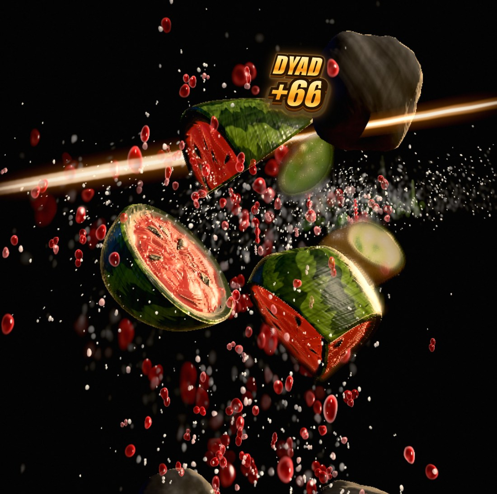
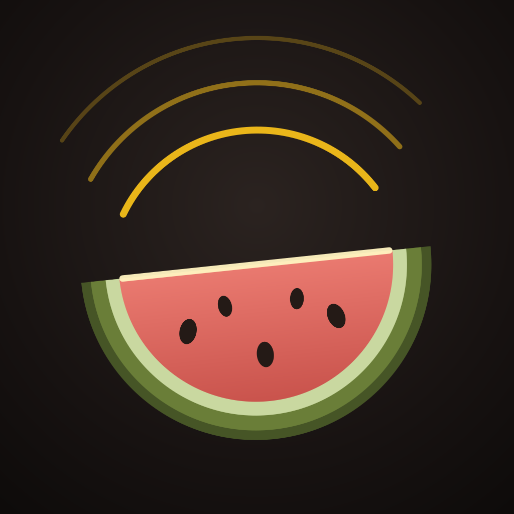

Chord Cut
A zen fruit-slicing game where the cut is the note.

Factsheet
| Developer | John Hurliman (solo) |
| Release | 2026 — in App Store review |
| Platforms | iOS 26+ (iPhone & iPad) · free 3-level web demo (WebGPU browsers) |
| Price | $2.99 — no ads, no IAP, no tracking, no network |
| App Store | apps.apple.com/us/app/chord-cut/id6803614537 |
| Web demo | jhurliman.github.io/zen-slice |
| Source | github.com/jhurliman/zen-slice (GPLv3) |
| Press contact | john@mvi.llc |
Description
Chord Cut is a meditative slicing game where the blade is a musical instrument. Every cut voices a piano chord from the current level's palette, and the beat is inferred from the player's own slicing tempo — there is no soundtrack; the player is the soundtrack. A ten-level "day arc" drifts from Still Water to an endless Deep Calm coda as the harmony deepens and the orchard changes.
What makes it interesting
- The cut is the note. Slicing paints onto a generative music system: single cuts play tones, multi-fruit cuts voice dyads, triads and full chords, quantized to a beat inferred from your tempo.
- Everything is procedural. Every fruit, material, juice droplet, light and piano note is generated on-device. The piano is rendered — not sampled — in an OfflineAudioContext at launch.
- Real cutting, real juice. Fruit meshes are split geometrically along the swipe; the juice is a GPU fluid simulation tuned against high-speed photography.
- 120 fps on ProMotion. Ships as a single self-contained HTML file inside a native shell — no downloads, no network, ever.
- Open source. GPLv3, with a public engineering log documenting every design decision — likely the first paid slicer whose entire source is public.
Icon

{kind=link}
{kind=link}
Screenshots
Captured on iPhone (WebGPU, native build). Click for full size.
{kind=link}
{kind=link}
{kind=link}
{kind=link}
{kind=link}
{kind=link}
About the developer
John Hurliman is a solo developer. Chord Cut was built in the open with its full engineering history — dead ends included — published in the repository's engineering log.
Everything on this page may be used freely in coverage of Chord Cut. For anything else: john@mvi.llc.